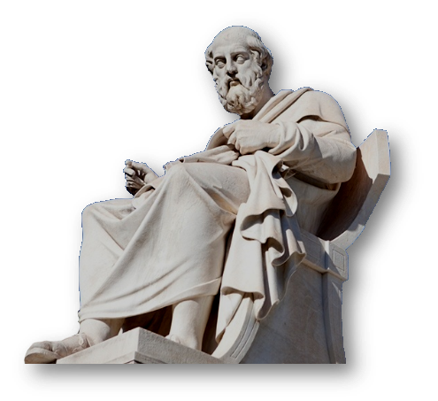

Nascido em Atenas, no ano de 428 a.C., e falecido em 348 a.C., o apelido Platão foi conferido ao filósofo em sua juventude por causa de seus atributos físicos, por ser um homem forte, de ombros largos (a palavra correspondente em grego, Platon, significa “omoplatas largas”, “costas largas”, “ombros grandes”).
Platão foi um filósofo e matemático do período clássico da Grécia Antiga, autor de diversos diálogos filosóficos e fundador da Academia em Atenas, a primeira instituição de educação superior do mundo ocidental.
O filósofo foi o responsável pela criação do chamado mundo das ideias e das formas, fundando o pensamento metafísico. Escreveu diversos diálogos filosóficos e fundou a Academia em Atenas, ou seja, é considerado o precursor do ensino superior no mundo ocidental.
Quando em 529 A.C. , o imperador romano Justiniano mandou fechar a Academia, junto com outras escolas não cristãs, a doutrina platônica já tinha sido amplamente difundida. Platão faleceu em Atenas, Grécia, no ano de 347 a.C.